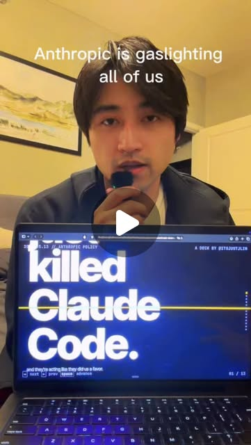
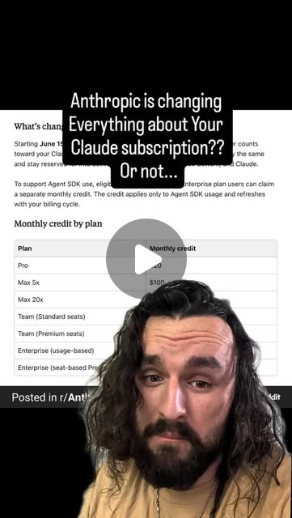
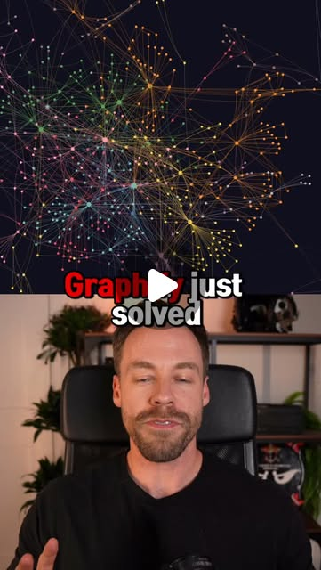

The Claude Harness Pattern: Context, Memory, and Cognitive Scaffolding
Try It — Action Sketch
1. Audit your current Claude setup — do you have a CLAUDE.md? Skills? Hooks? 2. Map your workflow: what context does Claude need every session vs. occasionally? 3. Build a minimal harness: CLAUDE.md (permanent rules) + primer.md (session state) + skills/ (reusable workflows) 4. Add memory persistence: file-based or MCP-backed cross-session recall 5. Layer in hooks for self-correction (caveman mode, token discipline, audit-after-step)
Connected Posts (9)





Prompt system — run this yourself
Pasteable into Claude Code, Claude, or any agent. One-shot for the whole result, step prompts when you want to steer. Every step carries its own audit; the gap audit makes the agent find and fill what it missed.
Mission. Produce a working, version-controlled Claude harness for one real project: a CLAUDE.md of permanent rules, a primer.md that is rewritten every session, a skills/ folder of reusable workflows, and at least one hook that self-corrects behaviour. Done means a fresh Claude session loads the harness, acts on it, and a before/after A-B test on three repeated tasks shows the harness version is measurably leaner or more correct than a bare session.
1 · Deeper, not bigger
- What a top professional would do (that you didn't ask for): A production agent engineer does not 'write a CLAUDE.md'. Following Richmond Alake's split that lindavivah relays, they separate three disciplines and build each deliberately: context engineering (signal/noise inside the window), memory engineering (what is retrieved, forgotten, evolved across sessions), and harness engineering (the scaffold code around the model). They treat the harness as code with tests: an eval set of representative tasks, an A-B harness that runs the same task with and without each component, and a metric (tokens, tool calls, pass rate). They ablate rules the way Boris Cherny's team does with simple mode, keeping only what earns its place.
- Rawest material to start from: Anthropic's own Claude Code docs on CLAUDE.md, skills, hooks and memory; Boris Cherny's published personal CLAUDE.md (plan-first, subagents, tasks/lessons.md, verification standard) that keshavsuki and evolving.ai describe; the primer.md + memory.sh + git-hook pattern keshavsuki shows; Graphify's repo for the knowledge-graph retrieval layer chase.h.ai demos; and your own last 20-50 session transcripts, which are the ground truth for what your harness actually needs.
- Methods and tools: Claude Code with a real git repo; a CLAUDE.md (rules), primer.md (session state, rewritten end-of-session), skills/ as markdown workflows, .claude/hooks/ for SessionStart context injection and PostToolUse guards; a memory.sh that injects last-5-commits + modified files at launch; Graphify (`/graphify .`) for query-before-read retrieval; a tiny A-B script that runs three fixed tasks with and without the harness and logs token counts and tool-call counts.
- What proves it right: An A-B test on three repeated tasks (harness vs bare session) where the harness version wins on at least one hard metric (fewer tokens, fewer tool calls, or a correctness check passing). A second, independent Claude session reading only the committed harness reproduces the intended behaviour without extra instruction. Boris Cherny's own ablation discipline is the oracle for whether each rule helps.
Rewritten prompt — ask for exactly that:
Act as an agent-harness engineer, not a prompt writer. For the repo at <path>, build me a three-layer Claude harness and prove it works. Layer 1 context: a CLAUDE.md of permanent, imperative rules distilled from my last 20 session transcripts at <transcripts path>, not generic advice. Layer 2 memory: a primer.md you rewrite at end of every session (current status, what changed, next up, blockers) plus a memory.sh that injects last-5-commits and modified files at launch. Layer 3 harness: a skills/ folder with at least two reusable workflows I actually repeat, and one .claude hook that self-corrects a behaviour I keep correcting. Then build an A-B test: pick three tasks I do often, run each with and without the harness, and log tokens and tool calls for both. Keep only harness components whose removal measurably hurts the A-B result, ablating the rest the way Boris Cherny's simple mode does. Return the committed files, the A-B numbers, and a short list of what you could not verify and why.
2 · One-shot prompt
You are an agent-harness engineer. Your job is not to write a better prompt; it is to build and prove a three-layer harness around Claude for one real project. Stance: adversarial about your own work, imperative in your writing, no marketing language. Context you must gather first: the repo at the path I give you, my recent Claude Code session transcripts (search ~/.claude/projects for this project), any existing CLAUDE.md or primer.md, and the three disciplines Richmond Alake names (context = signal/noise in the window; memory = retrieve/forget/evolve across sessions; harness = the scaffold code). Treat Boris Cherny's published CLAUDE.md as the reference pattern: plan-first, subagents for hard problems, every correction becomes a rule in tasks/lessons.md, never mark done without proving it works. Treat Graphify as the optional retrieval layer (build a graph once, query before opening raw files). Hard constraints: every rule you write must trace to evidence in my transcripts or to a named Anthropic doc feature, never to generic best-practice. Do not invent workflow I do not actually repeat. Do not add a component you cannot A-B test. Keep CLAUDE.md under 200 lines. Write files, do not just describe them. Touch only this repo. Ordered deliverables: (1) CLAUDE.md of permanent imperative rules, each annotated with the transcript evidence that justifies it. (2) primer.md seeded with current project state, plus a one-line CLAUDE.md rule to rewrite it at session end. (3) memory.sh that prints last-5-commits, modified files and current branch, wired via a SessionStart hook. (4) skills/ with at least two reusable workflows I repeat, each a standalone markdown file. (5) at least one .claude hook that self-corrects a behaviour I keep correcting (name the behaviour). (6) an A-B test script: three fixed tasks, each run with and without the harness, logging token count and tool-call count. (7) the A-B results table. Built-in gap analysis: before you finish, list every claim you have not verified (does the hook actually fire? does memory.sh run on this OS? did the A-B test use the same task text both arms?), and fill what you can by running it. If a transcript is missing, say so and derive rules from what exists rather than guessing. Self-questions you must answer in writing before finishing: Which of my rules would a second Claude session misread? Which component, if deleted, would the A-B test not notice (ablate it)? Is primer.md state, not a changelog? Does any skill duplicate a rule already in CLAUDE.md? Did I conflate context, memory and harness anywhere? Does the hook have a bypass? Is any number in the A-B table from a run that actually happened? Stop conditions: stop and ask me only if the repo has no git history or no readable transcripts. Otherwise proceed end-to-end. Return format: a markdown report with the file tree of what you created, the A-B results table (task, arm, tokens, tool calls), the ablation decisions (component / kept or cut / why), and a final 'Unverified and missing' section. Commit the harness files; print the commit hash.
3 · Step-by-step prompts
Step 1 — Ground truth from transcripts
Goal: Derive what the harness must do from real session evidence, not advice.
Establish ground truth before building anything. Locate my Claude Code session transcripts for this project (search under ~/.claude/projects for the directory matching this repo). Read the 15-30 most recent sessions. Extract, with a count for each: (a) corrections I repeat to Claude (the same complaint more than once), (b) context I paste or re-explain most sessions, (c) tasks I run more than twice, (d) mistakes that cost a retry. Also read any existing CLAUDE.md and primer.md and note what they already cover. Classify every finding into Richmond Alake's three buckets: context (belongs in the window every session), memory (must persist across sessions), harness (needs scaffold code or a hook). Output a table: finding, count, bucket, proposed component. Do not propose anything with a count of 1 unless it is safety- or money-touching. This table is the spec for every later step.
Expect: A table of 10-25 evidence-backed findings, each with an occurrence count and a context/memory/harness classification, plus a note on what the existing setup already covers.
Audit before moving on: Re-open two transcripts at random and confirm each finding you listed actually appears there with the count you claimed. Fail if any finding has no transcript backing or if you proposed a component for a count-1, non-safety item. On fail, drop the unbacked findings and recount.
Step 2 — Write CLAUDE.md (context layer)
Goal: Produce permanent imperative rules, each justified by step 1 evidence.
Using the step 1 table, write CLAUDE.md for this repo. Rules only, imperative voice, no explanations of what Claude is. Model the structure on Boris Cherny's pattern: plan before touching code; use subagents for hard problems to keep the main context clean; every correction becomes a rule; never mark a task done without proving it (tests or a behaviour diff against main). For each rule add a trailing comment `# evidence: <finding, count>` tying it to step 1. Keep the whole file under 200 lines. Put only context-bucket findings here; memory and harness findings go to later steps. Explicitly do NOT include a rule unless step 1 gave it a count or it is a safety/money guardrail. End the file with one rule: 'At end of session, rewrite primer.md completely (status, what changed, next up, blockers).'
Expect: A CLAUDE.md under 200 lines, every rule annotated with its evidence tag, ending with the primer.md rewrite rule.
Audit before moving on: Grep the file for rules without an `# evidence:` tag or safety justification; each one is a fail and must be cut. Confirm line count < 200. Confirm no rule restates a generic 'handle errors' platitude.
Step 3 — Memory layer: primer.md + memory.sh
Goal: Make session state persist and git state auto-inject at launch.
Build the memory layer keshavsuki describes. (1) Write primer.md seeded with the project's current status, what changed recently (from git log), next up, blockers, open questions. It is a snapshot, not a log. (2) Write memory.sh that prints the last 5 commits (`git log --oneline -5`), modified files (`git status --short`), and current branch, so a new session sees what changed before I speak. (3) Wire memory.sh into a SessionStart hook in .claude/settings.json (or settings.local.json) so it runs at launch, output captured to context. Do not duplicate anything already stated in CLAUDE.md. Keep primer.md under 150 lines.
Expect: primer.md (state snapshot), memory.sh (executable, prints commits/files/branch), and a SessionStart hook entry that runs it.
Audit before moving on: Run memory.sh in a shell and confirm it prints without error on this OS. Confirm the hook JSON is valid (parse it). Fail if memory.sh errors, if the hook JSON is malformed, or if primer.md is a changelog rather than current state. On fail, fix before continuing.
Step 4 — Skills: reusable workflows
Goal: Turn repeated tasks from step 1 into standalone skill files.
Take the two highest-count 'task I repeat' findings from step 1 and write each as a standalone skill markdown file under skills/<name>/SKILL.md. Each skill must be self-contained: a one-line trigger description, the ordered steps, the exact commands or file paths it touches, and a done-check. Do not personify ('act as an expert'); define the workflow and its end state, following angus.sewell's point that AI is good at specific workflows with clear instructions and a clear end state, not personas. Each skill must name the real tools and paths from this repo. Do not write a skill for a task that appears only once.Expect: Two or more SKILL.md files, each standalone, trigger + steps + commands + done-check, naming this repo's real tools/paths.
Audit before moving on: For each skill, verify you could hand it to a fresh agent with no other context and it would run. Fail any skill that references a variable or path defined only in your head, or that duplicates a CLAUDE.md rule. On fail, inline the missing context or merge into CLAUDE.md.
Step 5 — Self-correcting hook
Goal: Mechanically enforce one behaviour you keep correcting.
Pick the single highest-count correction from step 1 that can be enforced mechanically (e.g. deleting files, unbounded output, skipping tests). Write a hook in .claude/ that enforces it, modelled on jens.heitmann's daily hooks: for a deletion risk, a PreToolUse hook that moves files to a staging folder instead of deleting; for a verification gap, a Stop hook that checks tests ran. Make the hook fail loudly, not silently. Register it in settings. Document in one line what behaviour it guards and how to bypass it deliberately if ever needed.
Expect: One working hook file plus its settings registration, guarding a named step-1 behaviour, with a documented deliberate-bypass path.
Audit before moving on: Trigger the guarded behaviour in a scratch test and confirm the hook fires and blocks or redirects it. Fail if the hook is silent, if it never fires, or if it has an accidental bypass. On fail, fix the trigger condition and retest.
Step 6 — A-B test the harness
Goal: Prove each component earns its place; ablate the rest.
Build the proof. Choose three tasks I actually run on this repo (from step 1). For each task, run it twice with identical task text: arm A in a session with the full harness loaded, arm B in a bare session (use `claude --system-prompt` minimal or an empty CLAUDE.md). Log tokens used and tool-call count for both arms. Then run an ablation: remove each harness component (one rule group, the memory layer, each skill, the hook) one at a time and re-run the most sensitive task; if removal does not change the metric, mark that component for deletion. Produce (1) an A-B table: task, arm, tokens, tool calls; (2) an ablation table: component, metric with / without, keep or cut. Delete the components you marked cut and note it.
Expect: An A-B results table and an ablation table; the harness trimmed to only components whose removal hurt a metric.
Audit before moving on: Confirm both arms of each A-B pair used byte-identical task text (diff them). Confirm every number came from a run that actually executed, not an estimate. Fail if any arm was imagined or if task text differed. Keep a component you cut only if it is a safety/money guardrail.
Step 7 — Validate + gap report
Goal: Check against the oracles and report what is unverified.
Final validation. (1) Start a brand-new Claude session that reads ONLY the committed harness and give it one of the three tasks; confirm it behaves as the harness intends with no extra instruction. (2) Re-run the A-B test once more to confirm the harness arm still wins on at least one metric. (3) Enumerate every claim in your report and mark it verified / unverified / false with the evidence. (4) List what is still missing (a rule with no evidence, a skill never exercised, a hook not triggered in real use) ranked by impact, and fix the top two now. (5) Commit all harness files and print the commit hash. Return the final report with the file tree, both tables, the fresh-session result, and an 'Unverified and missing' section.
Expect: A fresh-session reproduction result, a re-run A-B confirmation, a verified/unverified/false claim ledger, and a committed harness with its hash.
Audit before moving on: Confirm the fresh session used no context beyond committed files. Confirm the commit actually exists (git show the hash). Fail if the harness arm does not win any metric, or if any 'verified' claim lacks evidence. On fail, state plainly that the harness did not beat baseline rather than massaging numbers.
4 · Gap analysis and audit
Run this after the harness is built. Enumerate every claim in the build report as a numbered list: each rule in CLAUDE.md, each skill, the memory layer, the hook, and every A-B and ablation number. For each, mark VERIFIED (with the exact evidence: transcript line, command output, commit hash), UNVERIFIED (never actually exercised), or FALSE (contradicted by a run). Specifically re-check: does memory.sh run without error on this machine; does the SessionStart hook actually inject its output; did the self-correcting hook fire against a real trigger; did both A-B arms use identical task text; is every token/tool-call number from a real run. List all missing pieces: rules with no evidence tag, skills never run, components kept despite the ablation saying cut. Rank the gaps by impact on whether the harness actually helps. Fix the top three now and re-verify them. Report what you could not fix and exactly why (missing transcript, OS limitation, needs my input). Do not mark anything verified on the basis of 'it should work'.
Questions the agent must ask itself before it says done:
- Did I separate context, memory and harness, or did I dump everything into CLAUDE.md?
- Does every CLAUDE.md rule trace to a transcript finding with a count, or is some of it generic advice?
- Is primer.md a current-state snapshot, or did I write a changelog?
- Does memory.sh actually run on this OS, or did I assume it works?
- Did the SessionStart hook actually inject context, or did I only register it?
- Did the self-correcting hook fire against a real trigger, or only in theory?
- Did both A-B arms use byte-identical task text?
- Is any A-B or ablation number from a run that did not actually happen?
- Which component would the ablation say to cut, and did I cut it?
- Would a second Claude session reading only the committed files reproduce the behaviour?
- Did any skill duplicate a rule already in CLAUDE.md?
- Did I keep CLAUDE.md under 200 lines and primer.md under 150?
- Does the hook have an accidental bypass that defeats its purpose?
- Did I ever personify a skill instead of defining its workflow and end state?
5 · What proves it right
- A fresh Claude session reading only the committed harness performs one of the three test tasks correctly with no extra instruction.
- The A-B test shows the harness arm beating the bare arm on at least one hard metric (tokens, tool calls, or a correctness check) across the three tasks.
- memory.sh runs on the target machine and its SessionStart hook output appears in a new session's context.
- The self-correcting hook demonstrably fires and blocks or redirects its guarded behaviour in a scratch test.
- The ablation table shows every retained component (except safety/money guardrails) changes a metric when removed.
6 · Failure modes
- Generic CLAUDE.md: rules copied from blog posts with no evidence tag. Tell: rules you cannot tie to a transcript. Fix: cut everything without an `# evidence:` tag or safety reason.
- primer.md becomes a diary: it grows and logs history instead of snapshotting current state. Tell: it keeps getting longer. Fix: rewrite from scratch each session, keep under 150 lines.
- Hook registered but never fires: wrong event or matcher. Tell: the guarded behaviour still happens. Fix: trigger it in a scratch test and correct the matcher.
- A-B theatre: arms used different task text or numbers were estimated. Tell: suspiciously clean wins. Fix: diff the task text, require real run logs.
- Everything kept: ablation run but nothing cut because removal was never actually tested. Tell: ablation table has no 'cut' rows. Fix: re-run the sensitive task with each component removed.
- Context/memory/harness conflated: skills restate CLAUDE.md rules, memory holds things that belong in the window. Tell: duplication across files. Fix: re-bucket using Alake's three definitions.
- memory.sh breaks on the OS: assumed bash/git layout. Tell: errors at launch. Fix: run it and handle the real shell/paths.
7 · Agent direction (unattended runs)
Reach first for transcript search (glob ~/.claude/projects for this repo's dir) and git log; these are your evidence base, do not skip to writing rules. Cache the step-1 findings table; every later step reads it. Spawn a sub-agent only for the A-B runs so each arm starts with a clean context, and pass it byte-identical task text for both arms. Run memory.sh and the hook for real before claiming they work; never mark a mechanical component verified from reasoning alone. Stop and ask the user only if there is no git history or no readable transcripts for this project. Return a single markdown report plus the committed harness files: CLAUDE.md, primer.md, memory.sh, .claude/settings*.json, skills/*/SKILL.md, and any hook script. Put the A-B table, ablation table, fresh-session reproduction result and an 'Unverified and missing' section in the report, and print the commit hash. Do not publish anything outside the repo. If the harness arm fails to beat baseline, say so plainly; a null result is a valid, reportable outcome here.
Prompt system updated 2026-10-22 · all prompt systems · JSON